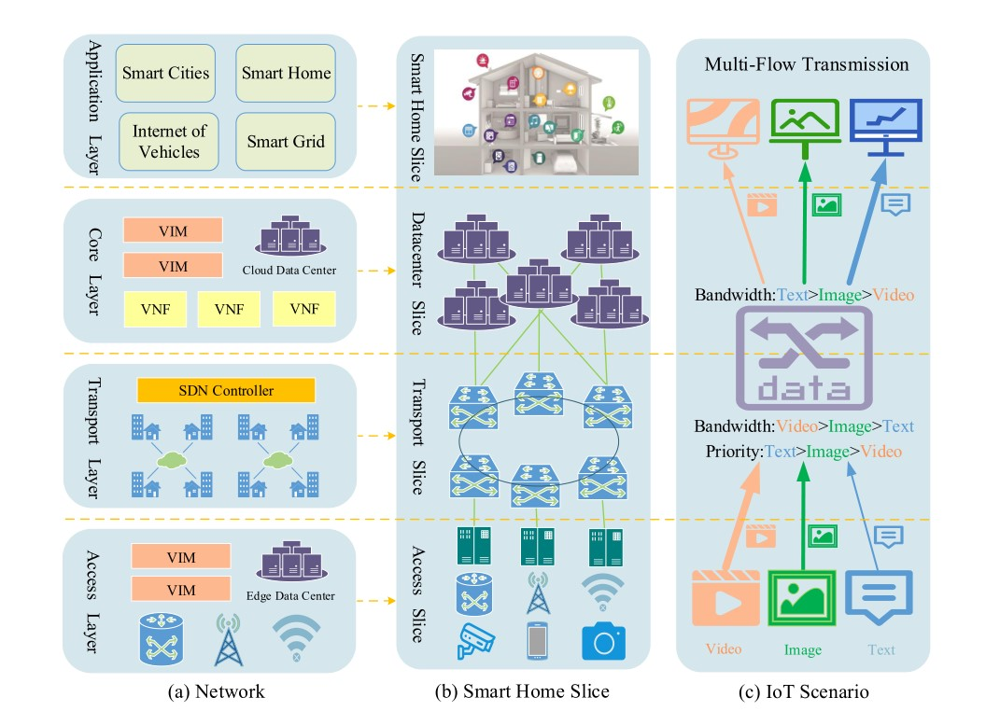

A SDN/NFV-Based IoT Network Slicing Creation System
we propose a novel IoT network slicing creation system which based on two emerging SDN and NFV technologies. It provides an easily-operating service creation environment and a service execution environment based on micro service architecture. We implement an IoT muti-flow transmission scenario. After adding subservices and QoS policies into a business process at the design plane, the IoT scenario can run automatically at the execution plane. Experiment results on the scenario show that the numbers of packets per second of different flows are changing gradually depend on QoS policies.
• Implemented IoT network slices storage model in the drag-and-drop workspace of Design plane. Realize the storage of information including network slice descriptor, VNF descriptor, business process information and QoS policies in IoT scenario.
• Solve the network problem of cross origin in management and orchestration domain of Execution Plane.
• Learned multi-objective optimization algorithm for Placement of Service Chain in NFV-enabled Data Center, to reduce Service Function Chain delay and optimize placement consumption while guaranteeing availability.
<Network, Slice and IoT scenario
The architecture of IoT network slicing creation system.